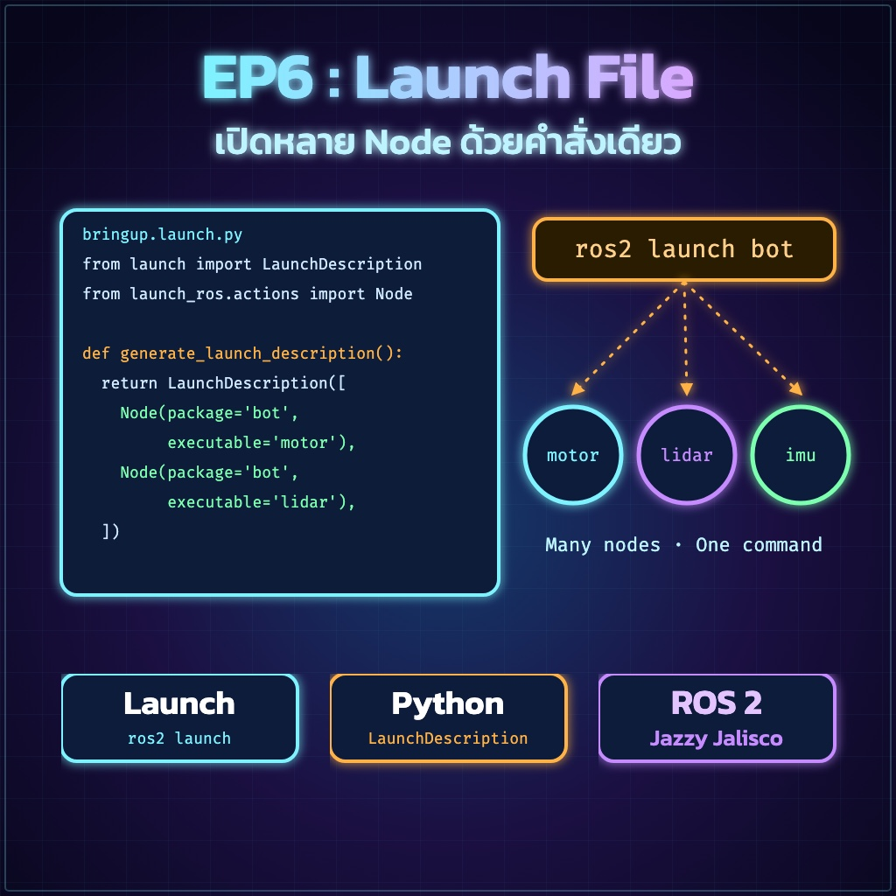
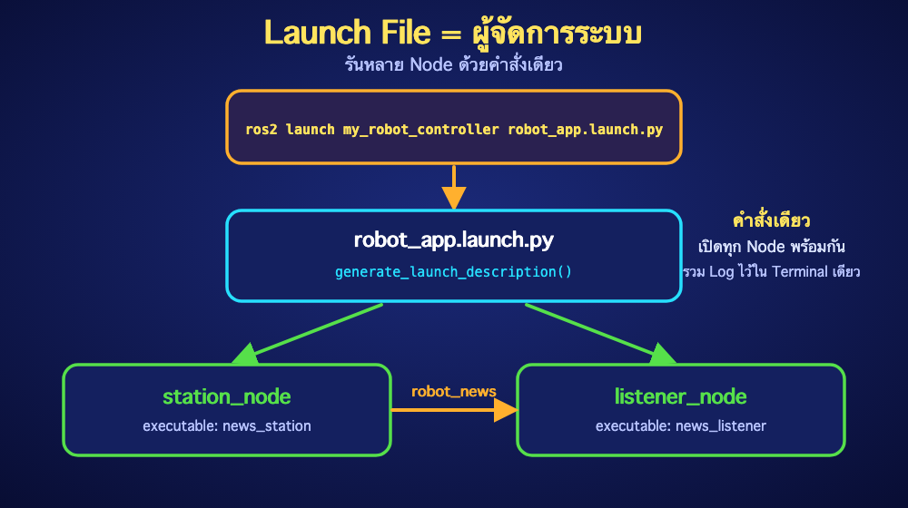

"เจาะลึกการทำงานของสคริปต์สั่งรันอัตโนมัติ"
ในโลกของหุ่นยนต์จริง เราอาจต้องรันโปรแกรมย่อยๆ พร้อมกันนับสิบตัว Launch File คือสคริปต์ Python ที่ทำหน้าที่เป็น "ผู้จัดการระบบ" ช่วยเปิด Node ทุกตัวให้เราในคำสั่งเดียว

สร้างโฟลเดอร์ launch และไฟล์ robot_app.launch.py ดังนี้:
robot_app.launch.pyเราระบุ LaunchDescription เพื่อสร้างใบสั่งงาน และ Node เพื่อบอกระบบว่าจะเปิดโปรแกรมตัวไหนจาก Package ไหน
generate_launch_description()นี่คือหัวใจหลัก! ROS 2 จะมองหาฟังก์ชันชื่อนี้เสมอ ถ้าตั้งชื่ออื่น ระบบจะหาทางรันไฟล์นี้ไม่เจอ โดยเราต้อง return รายการของ Node ออกไปเป็น List [ ]
package: ชื่อกล่องเก็บโค้ดที่เราสร้างใน EP5executable: ชื่อเรียกที่เราลงทะเบียนไว้ใน setup.pyname: ชื่อที่เราต้องการให้ปรากฏในระบบ (สามารถเปลี่ยนชื่อได้ที่นี่โดยไม่ต้องแก้โค้ดหลัก)
setup.py?"การเขียนไฟล์เสร็จ ไม่ได้หมายความว่าระบบจะหาเจอ"
ตามปกติระบบ ROS 2 จะมองหาไฟล์ที่อยู่ในโฟลเดอร์ install เท่านั้น การเพิ่มโค้ดใน data_files คือการสั่งให้ระบบก๊อปปี้ไฟล์ในโฟลเดอร์ launch ของเราไปวางในโฟลเดอร์ระบบด้วยทุกครั้งที่เราสั่ง colcon build
setup.pyos และ glob ต้องมีที่ต้นไฟล์ setup.py:import osfrom glob import globdata_files=[ ... ]ROS 2 เข้าไปหาไฟล์ในโฟลเดอร์ share ของระบบ
ระบบรันฟังก์ชัน generate_launch_description() เพื่ออ่านใบสั่งงาน
ระบบสั่งเปิด Node ทั้งหมดที่ระบุไว้พร้อมกัน โดยรวมหน้าจอ Terminal มาไว้ที่เดียว